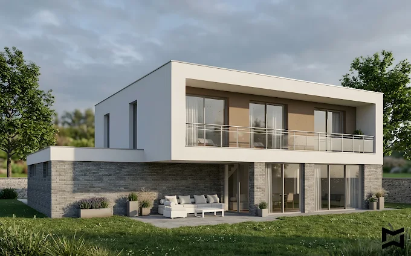

Pozwolenie na budowę — jak przebiega procedura i ile trwa?
Procedura uzyskania pozwolenia na budowę to jeden z najważniejszych — i często najbardziej stresujących — etapów każdej inwestycji. Wyjaśniam jak to działa krok po kroku.
Kiedy potrzebujesz pozwolenia na budowę?
Nie każda budowa wymaga pozwolenia. Część obiektów kwalifikuje się do tzw. zgłoszenia budowy — prostszej i szybszej procedury. Zasadniczo pozwolenie na budowę jest wymagane dla:
- Budynków jednorodzinnych, których obszar oddziaływania wychodzi poza granicę działki
- Budynków wielorodzinnych i komercyjnych
- Budynków o powierzchni zabudowy powyżej 70 m² (wolno stojące, jednorodzinne — mogą być na zgłoszenie)
- Obiektów budowlanych wymagających szczególnego trybu
Jeśli masz wątpliwości — warto skonsultować się z architektem lub wydziałem architektury, zanim podejmiesz jakiekolwiek działania.
Etapy procedury krok po kroku
Krok 1 — Sprawdzenie warunków zabudowy lub MPZP
Przed złożeniem wniosku musisz wiedzieć, co i jak możesz wybudować na swojej działce. Jeśli działka leży na terenie objętym miejscowym planem zagospodarowania przestrzennego (MPZP), obowiązują jego ustalenia. Jeśli nie — musisz uzyskać decyzję o warunkach zabudowy (WZ).
Krok 2 — Projekt budowlany
Wniosek o pozwolenie na budowę musi być złożony wraz z projektem budowlanym opracowanym przez uprawnionego architekta. Projekt składa się z: projektu zagospodarowania działki, projektu architektoniczno-budowlanego i projektu technicznego.
Krok 3 — Złożenie wniosku
Wniosek składa się do właściwego organu administracji architektoniczno-budowlanej — najczęściej jest to wydział architektury starostwa powiatowego lub urzędu miasta (dla miast na prawach powiatu, jak Białystok).
Krok 4 — Postępowanie administracyjne
Organ ma 65 dni na wydanie decyzji (termin ustawowy). W praktyce w Białymstoku czas ten wynosi zazwyczaj od 4 do 8 tygodni. Organ może wezwać do uzupełnienia braków — co wydłuża postępowanie.
Krok 5 — Uprawomocnienie decyzji
Po wydaniu decyzji strony mają 14 dni na odwołanie. Decyzja staje się prawomocna po upływie tego terminu (lub gdy wszystkie strony zrzekną się odwołania). Dopiero wtedy można legalnie rozpocząć budowę.
Jakie dokumenty są potrzebne?
- Wypełniony formularz wniosku (wzór określony rozporządzeniem)
- Cztery egzemplarze projektu budowlanego
- Oświadczenie o prawie do dysponowania nieruchomością na cele budowlane
- Decyzja WZ lub wypis z MPZP (jeśli wymagany)
- Warunki techniczne przyłączy (prąd, woda, gaz, kanalizacja)
- Opinie i uzgodnienia wymagane przepisami szczególnymi
Najczęstsze błędy, które opóźniają decyzję
W mojej praktyce najczęściej opóźnienia wynikają z: niekompletnej dokumentacji projektowej, braku wymaganych uzgodnień (np. z zarządcą drogi, konserwatorem zabytków), błędów w oświadczeniu o prawie do działki oraz niezgodności projektu z warunkami zabudowy lub MPZP.
Dobry projekt i doświadczony architekt, który zna lokalne wymogi, to najlepsza gwarancja sprawnej procedury.
Potrzebujesz pomocy z pozwoleniem na budowę w Białymstoku?
Skontaktuj się ze mną →Więcej wpisów
.webp)
.webp)